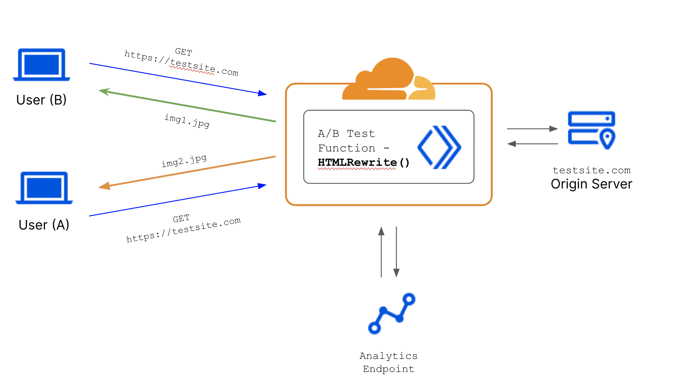
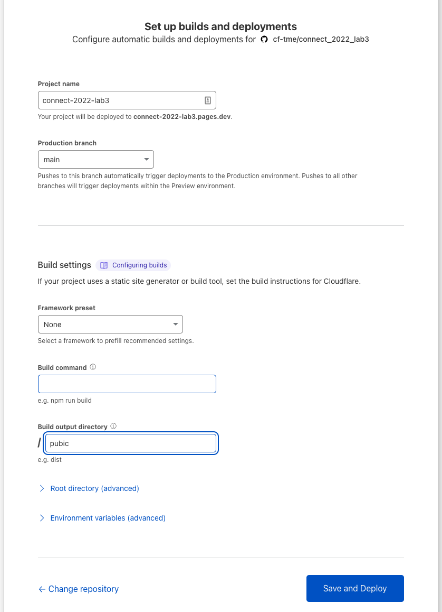

2. Cloudflare Workers
Welcome to Lab 3 at Cloudflare Connect 2022 - This lab will focus on designing a simple A/B Test for a webpage and writing the test with Workers functions.
By the end of this lab you will have:
Learnt the basics of A/B testing
Launched a local test environment using Wrangler
Cloudflare Workers allows you to deploy serverless code instantly across the globe to give it exceptional performance, reliability, and scale.
Learn More about Cloudflare Workers!
Check out the Cloudflare Homepage to learn more
2.1. Pre-Lab Notes
Cloudflare workers is a powerful way to write code infront of your applications directly on Cloudflares Edge Network. In order to full realize the benefit of Workers customers are encouraged to already have a domain onboarded to Cloudflare. In these cases it is possible to create routes that send requests to a set of workers functions before it is sent to the origin.
For A/B Testing the logical flow of data is represented by the diagram below

In this flow we are using a workers function to deliver different images to a requestor based on who they are (this can be at random, but more commonly is based on a cookie). Data about what content is served to who is then piped out into an analytics platform.
In this lab - since everyone may not have a custom domain to onboard to cloudflare we will be using the same Workers function and HTMLRewriter but we will be running it as a Cloudflare Pages Function to see it in action live.
2.2. Setup Basic Web Application
To make things easy we have already built a basic application that can be run on Cloudflare pages. Lets clone the repository and get started.
gh repo fork cf-tme/connect_2022_lab3
This should create a fork of the Lab 3 repository in your gh account. Follow the fork with a clone
gh repo clone <yourgithubusername>/connect_2022_lab3
Now all the files should be local in your working directory, let navigate into the repo to start coding!
cd <yourgithubusername>/connect_2022_lab3
With the repository cloned lets connect the application to your Cloudflare account and deploy it with pages.
2.2.1. Deploy project to Pages
Deploying our GitHub project to pages is as simple as connecting our GitHub account to Cloudflare.
Login to the Cloudflare Dashboard
Select Pages on the left hand side and press Create a Project and select Connect GitHub

Authenticate to GitHub
If you are not already logged into GitHub in your browser you may be asked to re-authenticate
You will be prompted to Install and Authorize Cloudflare Pages to your github account, press the button to proceed.

Once connected you will be brought back to the Cloudflare Pages dashboard. Select connect_2022_lab3 on the following page

Once selected you will need to configure build parameters. This is build using React so we will set the following build parameters:
Project name - connect_2022_lab3
Production branch - master
Framework preset - *blank*
Build command - *blank*
Build output directory - /public

Press Save and Deploy
Deployment Progress
Once started the deployment will take a few moments to complete - you can follow the deployment details to monitor progress of the deployment.
Once the deployment has completed you will be presented with a success message as well as a URL to visit your new project Select the link.
pages.dev Domain
By default new projects will automatically be given a *.pages.dev domain, If you would like to setup custom routes to your own domain you can do that through DNS CNAMEing (or directly in the project settings if your domain nameservers are Cloudflare)
A pages should launch with the simple words Hello World!
Great this means our application is up and now we can write a simple A/B Test to populate an image onto the page.
2.3. Write A/B Testing Function
With the application running lets return to our terminal and navigate to the functions directory
cd functions
Here there is a file _middleware.ts this file is the Workers function that will execute on ever request to the / or root page.
Open the _middleware.ts file in your favorite text editor.
Text Editor
VS Code is a versatile text editor that can be launched directly from the terminal using code
We will now add the function to this file that will follow the following logic:
Collect the origin response for the page (in this case since we placed the _middleware.ts file into the root it will be the root HTML page)
Choose between two images at random (the
Math.random()produces a value between 1 & 0 and testing it against a limit of 0.5 means an almost 50/50 split)Re-Write the HTML respone with the new image in the body and deliver it to the requestor.
The enter the below code into the _middleware.ts file
const imageA =
"https://imagedelivery.net/Upv7Q0MhroCOJHZCX_pZgA/9b0fabf0-8a5d-4d84-29d7-c438eb002d00/public";
const imageB =
"https://imagedelivery.net/Upv7Q0MhroCOJHZCX_pZgA/2b143d0b-006a-47e7-db0e-ce523edf5300/public";
export const onRequest: PagesFunction = async ({ env, request }) => {
const response = await env.ASSETS.fetch(request);
const imageURL = Math.random() > 0.5 ? imageA : imageB;
return new HTMLRewriter()
.on("body", {
element(body) {
body.append(`<img src="${imageURL}" />`, { html: true });
},
})
.transform(response);
};
Choosing Images
You can see in the code we are choosing between two images - these are hosted on Cloudflare Images. If you wanted to select any other images you could just paste the image URL there in the imageA or imageB variable definitions.
Save the file once you are done editing it.
2.4. Testing the Code Locally before Deploying
In order to test if our code has worked we could very easily publish our changes to the GitHub repository and have it changed live - but that doesn’t make sense in development environments because you may want to debug and validate your code works as expected before pushing it. To do this we have updated Wrangler to allow for local simulation of projects. Lets launch a local development instance of our project.
Back in the terminal window make sure the latest wrangler beta is installed
npm install wrangler@beta
npm installation
if you have not already installed npm on your system follow the steps in the Pre-Requisite section here
With the latest wrangler installed you can launch the project locally, first lets go back to the root project directory and then launch wrangler
cd ..
npx wrangler pages dev ./public
As the project is launching you should see
> npx wrangler pages dev ./public
🚧 'wrangler pages <command>' is a beta command. Please report any issues to https://github.com/cloudflare/wrangler2/issues/new/choose
Compiling worker to "/var/folders/5x/85cqyfb17tjbx6sxvdgpsk8h0000gp/T/functionsWorker.js"...
Compiled Worker successfully.
Serving at http://localhost:8788/
And on completion it should automatically launch a browser bringing you to your new homepage, with one of the pictures you selected!
If you refresh the page slowly a few times you should see the image cycle in-between the two images set in the worker script, this is the HTMLRewriter in action!
If you look back at the terminal window you will also notice the HTTP Requests being logged in the console by wrangler - when needed this is helpful when troubleshooting.
GET / 200 OK (52.79ms)
GET /favicon.ico 200 OK (5.60ms)
GET / 200 OK (4.17ms)
GET /favicon.ico 200 OK (3.78ms)
GET / 200 OK (4.12ms)
GET /favicon.ico 200 OK (4.16ms)
Now that we have confirmed the A/B test works as expected we can kill the wrangler dev setup with cntr+c and push our changes to github.
gid add .
git commit -m "added A/B test to randomly serve image"
git push
If we return to the the Cloudflare Pages project we should see that the deployment is in progress - wait for it to complete.
Once complete we can navigate to our application URL but this time we should a new images on our homepage! If we refresh slowly again we should see the image cycle just like we did in testing!
Image not changing?
Try loading the page in an incognito window in certain cases this helps with issues where browser is locally caching web elements.
LAB 3 COMPLETE!
You have successfully Completed Lab 3 - Cloudflare Workers, you have used the HTMLRewriter function to manipulate web content and deliver different content to different users based on a random seed. You ran your web application locally with wrangler to help test changes before deploying them live!